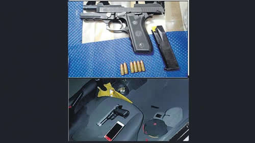

Real Chubut - Agencia de Noticias


Otro escalón de la orden de tirar primero y pensar después

El oficial llegaba con su novia, también policía, en su auto a su casa en Monte Grande. Tres jóvenes los amenazaron. El oficial entró al garaje, buscó el arma de su novia, salió y disparó matando a un adolescente, que tenía un revólver de juguete.
La doctrina de seguridad que impulsa el gobierno nacional subió un nuevo escalón de violencia ayer, al cobrar la vida de un adolescente fusilado por un oficial de la Policía de Seguridad Aeroportuaria (PSA). La versión policial sostiene que el joven, de 16 años, murió cuando intentaba robar el vehículo del oficial en el momento en que este llegaba a su casa junto a su novia, también de la PSA, en Monte Grande, partido de Esteban Echeverría. El adolescente estaba acompañado por otros dos jóvenes que lograron huir. Junto al cuerpo del pibe hallaron un arma de plástico con la que había amenazado al oficial. El caso quedó inicialmente calificado como “homicidio cometido en exceso de legítima defensa”. Mientras que se abrió otra investigación por el asalto. La calificación está sostenida en la versión del policía, que se esfuerza por subrayar que el adolescente utilizó la pistola de plástico confundida con una pistola real. Lo que evita subrayar esa versión es el tiempo transcurrido entre que la pareja fue obligada a bajar, que los tres jóvenes se subieron al vehículo, que el policía entró al garaje, buscó el arma de su novia, la tomó, salió del garaje y hasta que gatilló al menos ocho veces. Cuatro balas impactaron en el joven. Igual que en el caso del homenajeado por el presidente Mauricio Macri. El modelo Chocobar seguirá haciendo estragos.
El caso tuvo lugar ayer, en Monte Grande. El oficial subayudante de la PSA Matías Arrúa, de 25 años, llegaba a su casa sobre la calle Mariano Acosta al 300 con su novia, de 28, también de la Policía de Seguridad Aeroportuaria, a bordo de un Volkswagen Gol. En ese momento se acercaron tres adolescentes, uno de ellos con una pistola, con la que los amenazaron. La pareja estaba de civil, es decir, no era visible que fueran policías.
Fueron obligados a descender del vehículo.
Los ladrones les pidieron lo que tuvieran encima. El hombre entregó efectos personales y las llaves del auto, al cual se subió el trío con la idea de escapar del lugar.
Pero Arrúa aprovechó la distracción, entró en el garaje de su casa, buscó el arma de su novia, la pistola reglamentaria marca Taurus número 29099, calibre 9 milímetros. Salió del garaje y con la idea de impedir el asalto, empezó a gatillar contra el auto. Los proyectiles impactaron contra el auto que, según fuentes de la investigación, había avanzado unos metros. Uno de los asaltantes, un chico de 16 años, recibió cuatro de los impactos y murió en el momento. Su cuerpo quedó dentro del Gol, mientras que sus dos compañeros lograron escapar milagrosamente.
Al lugar llegaron inmediatamente patrulleros y médicos que comprobaron que el adolescente había fallecido. Según determinaron los médicos, el joven presentaba cuatro heridas de arma de fuego, con orificios de entrada y salida en la costilla dorsal izquierda, brazo izquierdo, oreja izquierda y hombro derecho.
Los investigadores aseguraron que tanto el oficial de la PSA como su novia, quienes se hallaban vestidos de civil y se encontraban francos de servicio, no sufrieron heridas ni lesiones en el hecho.
Además, se determinó que el vehículo Volkswagen Gol presentaba ocho orificios de arma de fuego, siete de ellos en la puerta del conductor (cinco en la ventana y dos en el panel de la puerta) y uno en la parte central del panel de la puerta del acompañante.
Los investigadores establecieron que Arrúa utilizó la pistola de su novia ya que él debía dejar el arma provista por la fuerza de seguridad en el momento en que abandonaba el Aeropuerto de Ezeiza donde presta servicio, mientras que ella cuenta con una portación extendida.
Sobre el asiento del conductor, la policía secuestró una pistola de juguete, con la cual se presume que los delincuentes amenazaron al oficial de la PSA.
El hecho es investigado por personal de la comisaría 1ª de Esteban Echeverría, que trabaja bajo las órdenes de la Unidad Funcional de Instrucción 4 descentralizada de Esteban Echeverría, especializada en delitos de violencia institucional, a cargo del fiscal Fernando Semisa. Según fuentes de la investigación, Arrúa declaró: “Escuché que gritaban ‘matá al rati! matá al rati’. Me asusté y tiré”. La escena, incomprobable por el momento, es la versión clásica policial. En todo caso, difícilmente podrían haber gritado, si los mismos asaltantes conocían su poder de fuego: en principio, nulo.
Fuentes judiciales explicaron que los investigadores trataban de determinar ayer por la tarde “si se cometieron irregularidades por parte de efectivos de la PSA y de la Policía Bonaerense para modificar la escena del homicidio”. Según fuentes de la investigación, dos oficiales de la PSA aparecieron poco después del hecho y revisaron el escenario sin formar parte del equipo de Policía Científica ni del grupo de investigadores de la Bonaerense y podrían haber modificado las evidencias.
El caso ocurrió 25 días después de que el presidente Macri recibiera al policía Luis Chocobar, procesado en primera instancia por homicidio con exceso en la legítima defensa (y luego aumentada la gravedad, al modificar la calificación por la Cámara en “homicidio agravado con exceso en el cumplimiento del deber), no sólo en una abierta intromisión y confrontación con la Justicia, sino también en una convalidación de lo actuado por el policía. Los resultados de ese homenaje se fueron revelando desde entonces (ver aparte). Una sucesión de casos de gatillo fácil en los que las víctimas contaron tanto entre los supuestos delincuentes como entre personas que circulaban por el lugar.
Fuente: Pagina 12